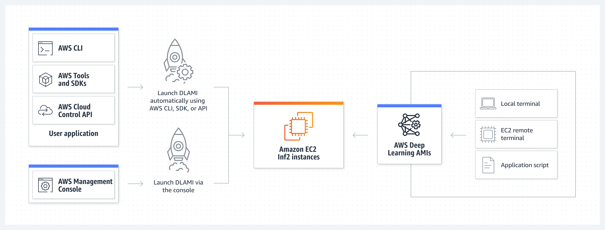

Beschreibung
Amazon EC2 bietet eine große Auswahl von Instance-Typen, die für unterschiedliche Anwendungsfälle optimiert sind. Instance-Typen unterstützen verschiedene Kombinationen von CPU, Arbeitsspeicher, Speicher und Netzwerkkapazität.
So können Sie flexibel die ideale Ressourcen Zusammenstellung für Ihre Anwendungen auswählen.
Jeder Instance-Typ gibt es in einer oder mehreren Größen, sodass Sie Ihre Ressourcen an die entsprechenden Zielvorgaben anpassen können.
Amazon Elastic Compute Cloud (Amazon EC2) bietet die umfangreichste und tiefste Datenverarbeitung Plattform mit über 750 Instances und einer Auswahl an neuesten Prozessoren, Speichern, Netzwerken, Betriebssystemen und Kaufmodellen, damit Sie die Anforderungen Ihres Workloads optimal erfüllen können. Wir sind der erste große Cloud-Anbieter, der Intel-, AMD- und Arm-Prozessoren unterstützt, die einzige Cloud mit EC2-Mac-Instances (On Demand) und die einzige Cloud mit 400-Gbps-Ethernet-Netzwerken.
Wir bieten das beste Preis-Leistungs-Verhältnis für Machine Learning Training sowie die niedrigsten Kosten pro Inferenzinstanz in der Cloud. In AWS laufen mehr SAP-, High Performance Computing (HPC-), ML- und Windows-Workloads als in jeder anderen Cloud.
Schlüsselwörter
> > > Schlüsselworte bzw. Schlagworte sollen uns dabei helfen, einen Service leichter zu erkennen, wenn es um Prüfungsfragen geht. Ließ dir die Fragen richtig durch und achte auf folgende Schlüsselworte. Sie können dir bei der Beantwortung der Fragen helfen.
- EC2-Instanzen: Virtuelle Server, die in der Cloud bereitgestellt werden und verschiedene Konfigurationen, Größen und Betriebssysteme unterstützen.
- Spot Instances: EC2-Instanzen, die zu niedrigeren Preisen verfügbar sind, basierend auf Angebot und Nachfrage auf dem Spotmarkt.
- Instanztypen: Unterschiedliche Konfigurationen von EC2-Instanzen, die auf verschiedene Anwendungsfälle und Leistungsanforderungen zugeschnitten sind, z.B. t2.micro, m5.large usw.
- Elastizität: Die Fähigkeit, EC2-Instanzen basierend auf sich ändernden Workload-Anforderungen automatisch zu skalieren.
- Auto Scaling: Ein Dienst, der automatisch die Anzahl der EC2-Instanzen in einer Anwendungsgruppe basierend auf vordefinierten Regeln und Metriken ändert.
- Dedicated Hosts: Ein physischer Server mit EC2-Instanzen, der für eine bestimmte Organisation isoliert ist.
- Security Groups: Virtuelle Firewalls, die den eingehenden und ausgehenden Datenverkehr für EC2-Instanzen steuern.
- Key Pairs: Paare von öffentlichen und privaten Schlüsseln, die für die Authentifizierung beim Starten von EC2-Instanzen verwendet werden.
- Instance Metadata: Informationen, die von EC2-Instanzen abgerufen werden können, um Details über die Instanz selbst zu erhalten.
- Load Balancer: Ein Dienst, der den eingehenden Datenverkehr auf mehrere EC2-Instanzen verteilt, um die Verfügbarkeit und Skalierbarkeit zu verbessern.
Grafische Erklärung

Prüfung Fragen
- Ein Unternehmen für Big Data-Analytik verlagert seine IT-Infrastruktur von einem lokalen Rechenzentrum in die AWS-Cloud. Das Unternehmen hat einige servergebundene Softwarelizenzen, die es auf AWS nutzen möchte. Welche der folgenden EC2-Instanztypen würden Sie als Cloud Practitioner dem Unternehmen empfehlen?
- Das DevOps-Team eines IT-Unternehmens verschiebt 500 GB Daten von einer EC2-Instanz zu einem S3-Bucket in derselben Region. Welches der folgenden Szenarien erfasst die korrekten Gebühren für diese Datenübertragung?
- Ein Praktikant in einem IT-Unternehmen hat eine Linux-basierte On-demand EC2-Instanz mit sekundengenauer Abrechnung bereitgestellt, diese aber innerhalb von 30 Sekunden wieder beendet, da er einen anderen Instanztyp bereitstellen wollte. Für welche Dauer würde die Instanz in Rechnung gestellt werden?